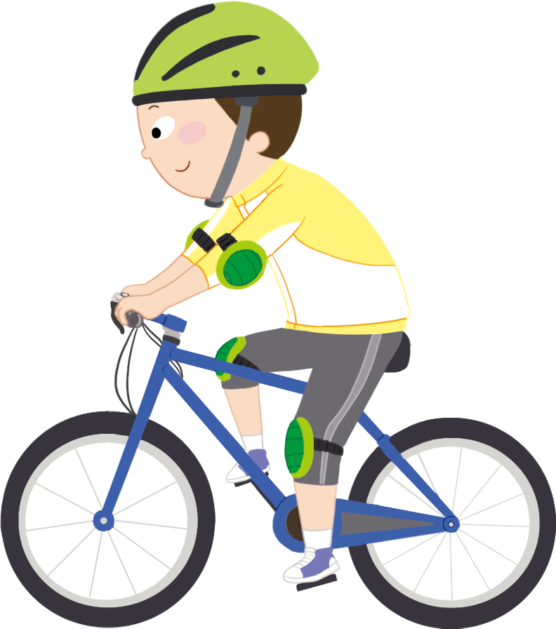

- 방법
- 물음 +
- 물음 +
-
-
자전거 타기는 자신의 체력에 알맞게 운동의 힘과 양을 조절할 수 있어서 누구나 즐길 수 있는 운동입니다.
요즘에는 지역별로 자전거를 타고 여행을 할 수 있도록 지도를 제공하기도 합니다. 다음 지도를 보고 나만의 여행 경로를 정해 볼까요?오르막길은 짧은
거리라도 시간이
많이 걸려. -
-
-
자전거 길의 지도에는 무엇이 표시되어 있나요?
예각 경로의 거리, 걸리는 시간, 인증 도장의 위치가 표시되어 있습니다. -
거리와 시간이 어떻게 표시되어 있나요?
예소수로 표시되어 있습니다. 거리는 ‘km’, 시간은 ‘시간’을 단위로 합니다.